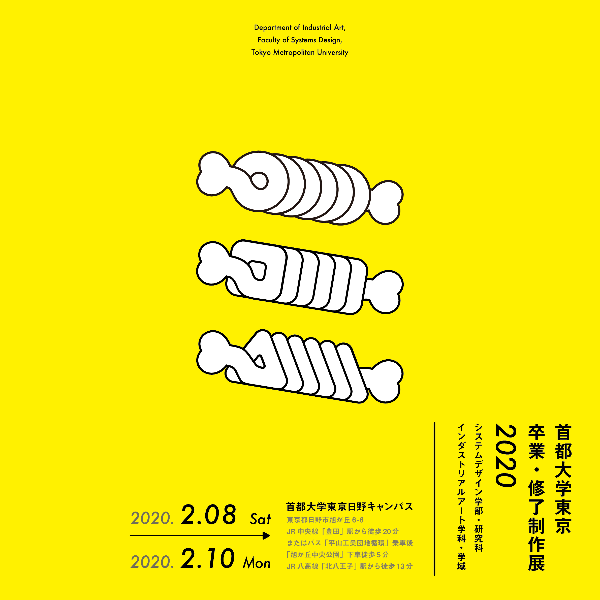

卒業・修了制作展２０２０
首都大学東京 日野キャンパス
開催期間 : 令和2年2月8日|土| - 2月10日|月| 11時30分-17時30分
第11回目の開催となる今年のコンセプトは「骨」です。骨をつくり、肉をつけていくように、1,2年次に築いた基礎をもとにしてそれぞれ見出した研究分野における知識を深め、表現や技術を身につけてきました。ご来場される皆様に展示でしか味わえないたくさんの作品に触れていただき、一人一人がどのような肉付けをしてきたのかを感じていただけますと幸いです。